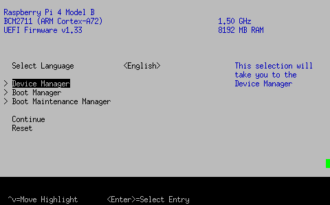
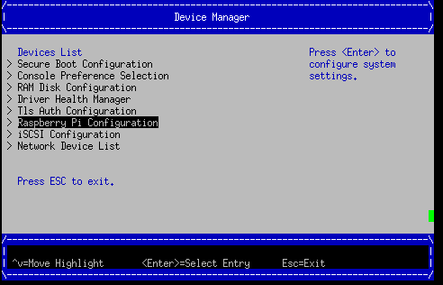
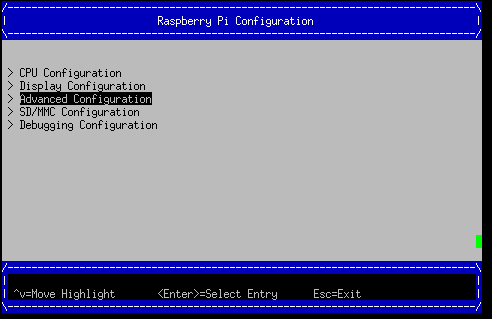
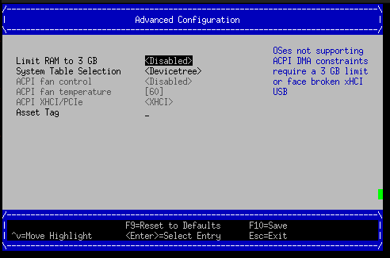
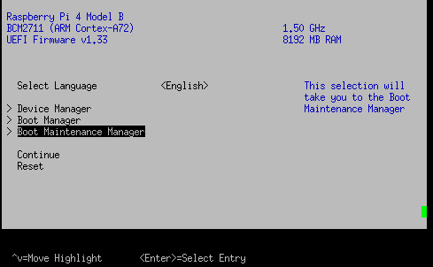
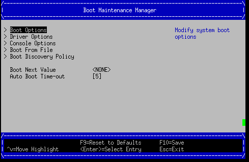
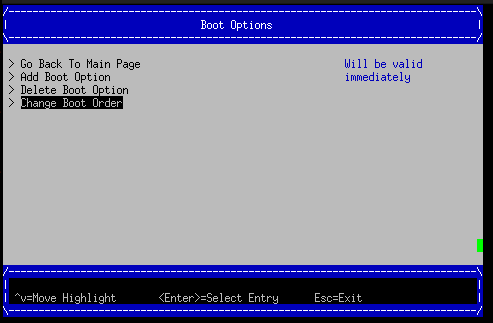
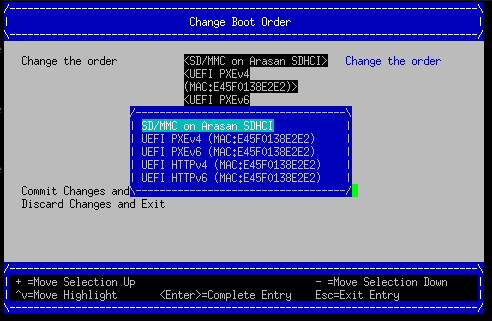
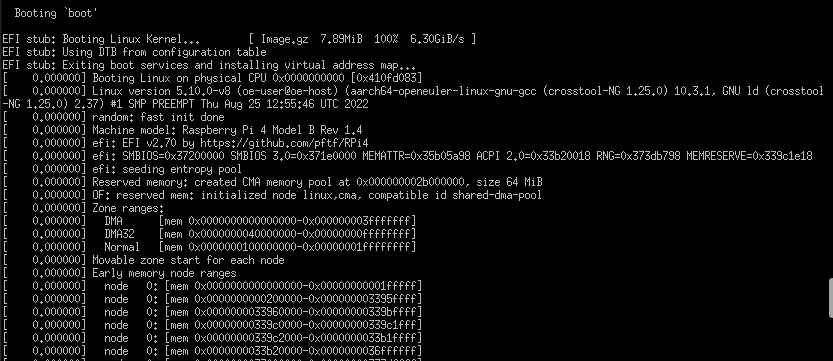
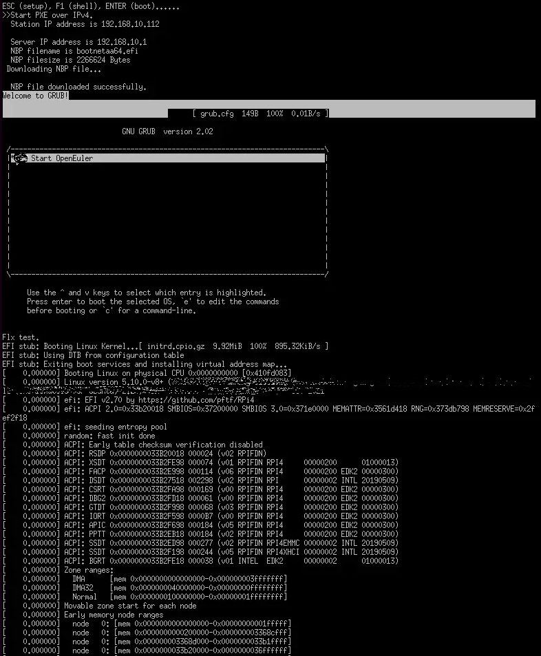

树莓派的UEFI支持和网络启动¶
本文档介绍如何让树莓派4B支持UEFI（UEFI第三方固件支持PSCI标准实现，混合部署的从核启停依赖此功能），并可通过SD卡或网络启动 openEuler Embedded。
使用openEuler Embedded UEFI+GRUB的树莓派镜像¶
openEuler Embedded 的树莓派混合关键部署镜像(openeuler-image-mcs for RPI4)默认使能了UEFI+GRUB，并集成了基于树梅派4B的混合部署环境依赖。
以下会基于mcs镜像介绍如何使用树莓派UEFI。
构建树梅派openeuler-image-mcs镜像和烧录¶
openeuler-image-mcs启动使用指导¶
烧录后首次启动需修改UEFI配置，启动阶段按ESC进入UEFI，按下图操作解锁3G内存限制并关闭ACPI选用DEVICETREE，保存重启后再操作步骤2
    更改boot order或手动选择SD卡启动，如下，最后选择Commit Changes and Exit
    启动截图
 Attention
此UEFI版本的固件默认使用3G内存limit，可以在UEFI菜单中关闭3G limit，否则系统启动后你看到的内存只有3G【官方说明 】
该版本UEFI+ACPI部署方法有缺陷（HDMI驱动异常），首次使用必须进入UEFI菜单，使用DEVICETREE模式
手动刷新固件使树莓派4B支持UEFI引导¶
环境/工具准备¶
编译工具链：可用openEuler Embedded的交叉编译工具链，参考 基于SDK的应用开发 部分。
设备：建议树莓派4B的出厂配置，包括树莓派4B基础套件和SD卡
openEuler Embedded标准镜像 + UEFI固件下载和刷新方法¶
将openEuler Embedded树莓派镜像烧录到SD卡
参考： openEuler烧录参考
如何获得openEuler Embedded树莓派镜像，参照 关键特性/树莓派4B的支持/树莓派镜像构建指导 部分
# 假设镜像名 openeuler-image-raspberrypi4-64.rootfs.rpi-sdimg， SD卡识别为/dev/sda (linux环境) sudo dd bs=4M if=openeuler-image-raspberrypi4-64.rootfs.rpi-sdimg of=/dev/sda
烧录完成后，将SD卡（boot盘）根目录的kernel8.img文件压缩成Image.gz:
# boot分区可能已经满了，移出kernel8.img再操作 mv SDbootVolumes/kernel8.img /tmp/Image gzip -c /tmp/Image > SDbootVolumes/Image.gz
下载树莓派UEFI固件
下载上述固件后解压，将除了bcm2711-rpi-4-b.dtb之外的所有文件拷贝到SD卡（boot盘）根目录（覆盖之前的文件）:
# 备份bcm2711-rpi-4-b.dtb cp SDbootVolumes/bcm2711-rpi-4-b.dtb /bakdir/bcm2711-rpi-4-b.dtb cp -rf /xxx/RPi4_UEFI_Firmware_v1.33/* SDbootVolumes/ # 恢复使用备份的openEuler Embedded的dtb cp /bakdir/bcm2711-rpi-4-b.dtb SDbootVolumes/
Attention
3G内存解锁和关闭ACPI使能DEVICETREE请参考上述”openeuler-image-uefi启动使用指导”章节
kernel8.img不再需要，清务必删除，否则将影响启动。
制作grub并选择启动方式
SD卡启动参考本文档章节： 树莓派UEFI之手动制作grub并通过SD卡启动openEuler Embedded
网络卡启动参考本文档章节： 树莓派UEFI之手动制作grub并通过网络启动openEuler Embedded
树莓派UEFI之手动制作grub并通过SD卡启动openEuler Embedded¶
grub准备（编译+制作grub启动组件）¶
grub源码获取
grub组件编译
解压源码包并进入根目录，准备开始构建arm64-efi（交叉编译）的grub库，注意此时交叉编译工具已经配置完毕，按如下步骤执行:
./autogen.sh ./configure --prefix=/xxx/grub-2.02/build --with-platform=efi --disable-werror --target=aarch64-openeuler-linux-gnu make构建成功后，在当前目录会生成对应的二进制和grub组件依赖库，其中，grub-core即制作grub-efi需要的工具库，grub-mkimage即制作板子grub.efi引导的host-tool。
制作引导程序
接下来制作板子引导grub程序，下例输出名为bootaa64.efi，生成后请放置到SD卡boot分区的对应目录(/EFI/BOOT/bootaa64.efi)：
./grub-mkimage -d ./grub-core -O arm64-efi -o bootaa64.efi -p '' ls grub-core/*.mod | cut -d "." -f 1 mkdir -p SDbootVolumes/EFI/BOOT cp ./bootaa64.efi SDbootVolumes/EFI/BOOT/Note
xxxxx目录中请不要带“.”，否则请适配上述语法。
制作引导配置文件
最后，编辑grub.cfg配置文件，grub.cfg配置文件同bootaa64.efi放在一起（/EFI/BOOT/grub.cfg），就绪后在UEFI菜单中选择SD卡启动即可。grub.cfg示例内容如下（后面是cmdline内容，linux gz压缩的内核，使用sd卡分区，不需要initrd）：
insmod gzio set timeout=0 menuentry 'Start OpenEuler' { echo "openEuler test." linux /Image.gz coherent_pool=1M 8250.nr_uarts=1 snd_bcm2835.enable_compat_alsa=0 snd_bcm2835.enable_hdmi=1 bcm2708_fb.fbwidth=1824 bcm2708_fb.fbheight=984 bcm2708_fb.fbswap=1 smsc95xx.macaddr=E4:5F:01:38:E2:E2 vc_mem.mem_base=0x3ec00000 vc_mem.mem_size=0x40000000 dwc_otg.lpm_enable=0 console=tty1 console=ttyS0,115200 console=ttyAMA0,115200 root=/dev/mmcblk0p2 rootfstype=ext4 rootwait }Note
上述内容需配合oepnEuler embedded构建的树莓派镜像，并在UEFI 非ACPI（DEVICETREE）下使用，dtb使用openEuler embedded镜像中的内容。其中Image.gz即内核Image的gizp压缩，可通过gzip -c kernel8.img > Image.gz获得（若使用openEuler embedded镜像），kernel8.img不再需要，清务必删除，否则将影响启动。
树莓派UEFI之手动制作grub并通过网络启动openEuler Embedded¶
准备PXE部署服务器
以ubunutu 14.04为例，dhcp中指定的filename就是grup的efi引导文件名
假设服务器网段为192.168.10.x，服务器ip为192.168.10.1，网卡eth0用于dhcp服务，初始化服务器ip例：
sudo ifconfig eth0 192.168.10.1 up使能DHCP服务
安装DHCP软件:
sudo apt-get install isc-dhcp-server编辑/etc/dhcp/dhcpd.conf文件，内容示例：
allow booting; allow bootp; option domain-name "example.org"; default-lease-time 600; max-lease-time 7200; ddns-update-style none; subnet 192.168.10.0 netmask 255.255.255.0 { range 192.168.10.100 192.168.10.200; filename "mygrub.efi"; #默认下载的grub文件名，和3中制作的efi引导程序名字需匹配 option routers 192.168.10.1; next-server 192.168.10.1; #tftp服务器IP，PXE必须，HTTPBOOT可选 option broadcast-address 192.168.10.255; }
配置DHCP服务网络接口,编辑文件/etc/default/isc-dhcp-server 增加/修改字段：
INTERFACES=”eth0” #dhcp使用的网卡启动DHCP服务:
sudo /etc/init.d/isc-dhcp-server restart使能TFTP服务
安装TFTP服务器软件:
sudo apt-get install tftpd-hpa配置TFTP服务，编辑/etc/default/tftpd-hpa 文件，示例内容如下:
TFTP_USERNAME="tftp" TFTP_ADDRESS=":69" TFTP_DIRECTORY="/var/lib/tftpboot/" TFTP_OPTIONS="--secure -l -c -s"
启动TFTP服务:
sudo /etc/init.d/tftpd-hpa restartgrub准备（编译+制作grub启动组件）
grub源码获取
grub组件编译
解压源码包并进入根目录，准备开始构建arm64-efi（交叉编译）的grub库，注意此时交叉编译工具已经配置完毕，按如下步骤执行:
./autogen.sh ./configure --prefix=/xxx/grub-2.02/build --with-platform=efi --disable-werror --target=aarch64-openeuler-linux-gnu make
构建成功后，在当前目录会生成对应的二进制和grub组件依赖库，其中，grub-core即制作grub-efi需要的工具库，grub-mkimage即制作板子grub.efi引导的host-tool。
制作引导程序
接下来制作板子引导grub程序，下例输出名为mygrub.efi：
./grub-mkimage -d ./grub-core -O arm64-efi -o mygrub.efi -p '' ls grub-core/*.mod | cut -d "." -f 1Note
xxxxx目录中请不要带“.”，否则请适配上述语法。
制作引导配置文件
最后，编辑grub.cfg配置文件，grub.cfg配置文件放在tftp的根目录（/var/lib/tftpboot/grub.cfg），就绪后在UEFI菜单中选择IPV4网络启动即可，grub.cfg示例内容如下（Image.gz后面是cmdline内容，linux gz压缩的内核，initrd文件系统）：
insmod gzio set timeout=0 menuentry 'Start OpenEuler' { echo "openEuler test." linux /Image.gz coherent_pool=1M 8250.nr_uarts=1 snd_bcm2835.enable_compat_alsa=0 snd_bcm2835.enable_hdmi=1 bcm2708_fb.fbwidth=1824 bcm2708_fb.fbheight=984 bcm2708_fb.fbswap=1 smsc95xx.macaddr=E4:5F:01:38:E2:E2 vc_mem.mem_base=0x3ec00000 vc_mem.mem_size=0x40000000 dwc_otg.lpm_enable=0 console=tty1 console=ttyS0,115200 console=ttyAMA0,115200 initrd /initrd.cpio.gz }
附：网络启动时，内核Image.gz和文件系统initrd的来源说明¶
文件系统例子
若使用网络启动，可使用openEuler Embedded构建的标准树梅派镜像构建过程中的rootfs并手动打包，也可使用openEuler Embedded发布的qemu-aarch64参考 文件系统
手动打包rootfs例子（预先需准备openEuler Embedded树梅派已构建完成的环境）:
# 假设已经处于构建build目录 cd tmp/work/raspberrypi4_64-openeuler-linux/openeuler-image/1.0-r0/rootfs/ find . | cpio -H newc -o | gzip -n9c > ../initrd.cpio.gz # 生成在上层目录的initrd.cpio.gz即为所需文件系统Note
配置文件系统/etc/inittab时注意getty登录时串口重定向要配置正确，否则可能没有打印。（树莓派4B硬件串口PL011对应，引脚14TXD和15RXD）
内核例子
若使用网络启动，可使用openEuler Embedded构建的标准树梅派镜像中的kernel8.img，格式即Image，然后通过gzip压缩为Image.gz格式
内核单独编译例子（openEuler）
Attention
若使用上述UEFI+ACPI部署方法，必须在config中开启ACPI系列功能支持。在make menuconfig ARCH=arm64菜单中，选中ACPI默认系列支持。建议在UEFI中关闭ACPI选用DEVICETREE（参考openeuler-image-uefi启动使用指导相关配置)
编译生成的Image，在上述efi配置下，grub.cfg的linux格式需使用gz命令压缩成Image.gz
操作说明
将上述内核和文件系统，放在tftp服务目录下（/var/lib/tftpboot）即可进行网络启动。
网络启动基本流程如下：
DHCP服务器给单板分配IP
单板启动UEFI选择PXE启动
PXE根据DHCP的filename和tftp服务器地址，从tftp服务器下载mygrub.efi
进入grub引导程序，根据grub.cfg配置，从对应tftp目录下载文件系统和内核并加载启动
其中，使用的ACPI资源表/DTB是UEFI固件初始化好的（引导内核前已放在对应内存），不过cmdline/bootargs可通过grub.cfg进行配置，在加载内核时，grub会传递给UEFI并上报给系统。
